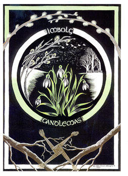
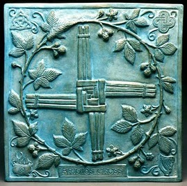

|
Imbolc, Oimelec, Brigantia, Bride, Candlemas

“Cando a Candelaria chora, medio inverno vai fora; e que chore ou que deixe de chorar, a metade do inverno está por pasar.”
“If the Candlemas day is bright and clear, there will be two winters along the year.”
(Old galician saying)
Imbolc is one of the four major Sabbats in the european pagan tradition. It is celebrated between the first and third of february, when Aquarium is 15 degrees respect to the Sun. Days are longer and spring isn’t that far.
Druids called this celebration “Imbolc” which means “in the womb” and also “Oimelec”, which means “sheep’s milk”. Anglosaxons called it Candlemas, and the scottish called it Bride or Brigantia in honor of the goddess Bridget, Brighid or Brigit. In Spain we know it as the “Candelaria”, a christian festivity rooted in paganism that is celebrated in the 2nd of February. The Catholic Church modified the pagan celebration and adapted it to its religion, transforming the goddess Brigit into Saint Bridget (Santa Brígida). Later, due to popular devotion, this saint was promoted to Virgin, and thus called the “Virgen de las candelas”, the candle virgin. The church dedicated this day to the consagration and blessing of the candles that would be used in the new liturgical year. In the christian catholic tradition this day commemorates the purifying of the Virgin Mary in the Temple and the presentation of Jesus in it when he was a child, in front of Simeon and the wise jews.
In Ireland, february was the month dedicated to Brighid/Brigit, who was also known as the Three Mothers and the Three Blessed Ladies of Britain. Nine or nineteen priestesses in the Kildare sanctuary devoted to her kept the flame lit. Brigantia was celebrated the third of february.
There were wells all along the british islands related to the goddess. These held the power to give back sight to the blind and to heal wounds that couldn’t be cured by normal methods.
Brigantia was also the goddess of a widespread Celtic tribe known as the Brigantes.
According to the arthurian legend, this festivity is connected to the times in which celtic males would gather before the rock which held the sword that would proclaim the real king..

Brigit masters fire, wisdom and inspiration. She is the patron goddess of blacksmiths, craftsmen, poets, bards, artists and healers. Due to these virtues, she is represented in a triple form. She is also the power of the new moon and of spring. She is related with agriculture and fertility. She symbolizes the sacred fire of healing and birth, and of the forge and of artistic inspiration.
The Goddess appears as a young maiden. The God can appear both as a young man or as a child.
In the far away past big bonfires were lighted on the hills, until candles replaced them in the V Century. Another common tradition was crafting with hay the well-known Brigit cross, then to hang it on the front door of the house so that evil would be kept outside.
This is the ideal moment to make handcrafted candles and to carry out purification rituals. The Imbolc energies favour dealing with ethical issues related to forgiveness. They protect and favour intellectual and personal creative work.
Colors: yellow, orange, red, green.
Scents: lemon, saffron, laurel, verbena, myrrh.
Gems: amethyst, citrine, topaz, coral, ruby.
Gods/Goddesses: Minerva, Athena, Vesta, Brigid.
Food: sesame bread, cereal cookies, roast pork or wild boar (bones were buried in the fields to guarantee the fertility of the land), milk.

|
 RSS
RSS